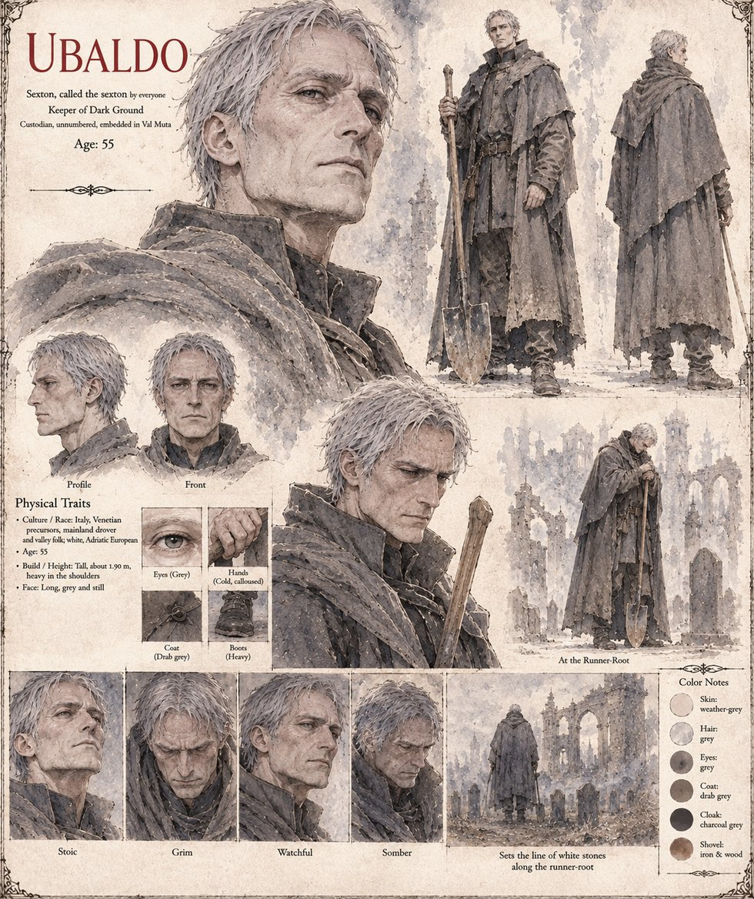
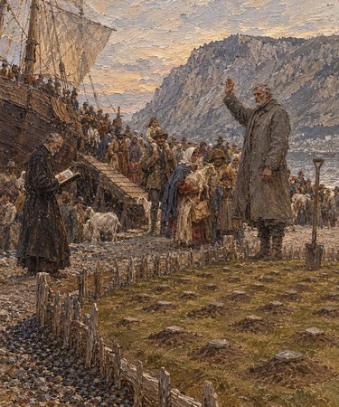
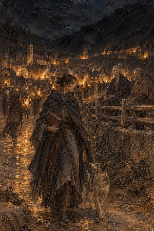

Ubaldo
Sexton, called the sexton by everyone · keeper of Dark Ground · the Custodian, unnumbered, embedded in Val Muta · no age in the manuscript, 55 on his sheet
He is the first thing the settlers see of the valley: a tall, gray man, heavy in the shoulders, standing at a fence of split stakes beside sixty-odd mounds and an upright shovel, who lifts a hand and waves at the first boat. His voice has the low gravel of a cart on a stone road. He gives his name as Ubaldo and is called the sexton by everyone thereafter. Asked whom he has buried he says Wayfarers; of the sixty-three mounds, nineteen hold nothing, because he digs a grave and sets a marker regardless, on the principle that a name deserves one, and he knows the names because he asks them of every party that stops at his fence. The manuscript’s header gives the rest: he is the Custodian, unnumbered, embedded in Val Muta, in a sexton’s cover chosen for proximity and not for its proverb that a sexton cannot be frightened. His duty is to be present, to log, and to let the specimen do what it was built to do to whoever comes near it. He counts twelve hundred and four settlers, then twelve hundred and five, for a child born in the fourth boat whom no one entered, and he enters the child.
The Legate rules his graveyard Dark Ground, which the sexton takes for a change of title only. Every seventh morning, before the village is up, he drives a peg at the tip of the runner-root creeping toward the Far Lamp. On the twenty-first of Iverin he watches the flower take Ilario in thirty-one seconds, enters the time, the place and the identity, and does not lift the shovel; that night he composes eleven sentences about it and keeps none. When Agata runs at the hollow at noon he steps in front of her at the fence, takes her by both arms and holds her while she strikes him, his hands as cold as a cellar; it costs him more than his file had any column for. He digs her brother’s grave that evening and sets a stone with a name no form had authorized. The Inquest of Lights does not call him, since a keeper of unaccounted ground is not a witness of accounted matters. He lays eighty-nine white river-stones along the reach of the root so that no one will mistake where it ends, and the ferry-master sells stools beside them.
When the foreigner Higaide asks names too, the sexton gives him Tonin’s, a drover’s journeyman buried that morning; when the hollow replays the man (Oh — it is warm) and the Listeners have no name for him, Higaide supplies it: He asked. The Tribune Domenica Ardizzon, kneeling at a shallow mound, is told There is a name. After the Great Lighting he enters Specimen burned. Specimen viable. When a pale hermit walks down from Monte Cieco the two speak for eleven minutes, in nineteen words, about shrimp, and for the first time in three years the sexton writes nothing. On Higaide’s last evening he asks him the one word he has said to every wayfarer, Name?, and says it back, Tomobe no Higaide, with every stress where it belonged. The closing log counts fifty-eight markers set by this Custodian, nineteen of the names obtained by Higaide. That spring he digs a grave for a Legate who asked to lie in Dark Ground, and sets a tin whistle beside the name.
The manuscript gives no age, a tall, gray build heavy in the shoulders, the gravel voice, the cold hands, a labourer’s coat, the shovel and the white river-stones; it gives no face, height, hair or eye colour. The sheet’s age of 55, height of about 1.90 m, long grey face, grey eyes, long drab-grey coat with a charcoal hooded cloak and heavy boots are its own, as are its panels Stoic, Grim, Watchful and Somber, its view At the Runner-Root and its scene Sets the line of white stones along the runner-root; the ruined arches and gravestones behind him are the sheet’s too. Its title strip (Sexton, called the sexton by everyone, Keeper of Dark Ground, Custodian, unnumbered, embedded in Val Muta) follows the manuscript.
“I ask them.”
Appears In

Related Subjects


Related Records

On the ninth evening of the river, the first thing the settlers see of Val Muta is a graveyard: a low fence of split stakes, sixty-odd mounds, each marked with a flat river-stone, and at the far end a shovel planted upright in the ground. Ubaldo beside it lifts his hand, slowly, and waves. The goats come off the boats in a clattering, aggrieved flood, the boatmen carry the children ashore, and Ottone, at the foot of the first gangplank, writes each family in a single line apiece.

On the twenty-first of Iverin, a little after the tenth hour, Ilario, nineteen, sits on the low stool beside the iron post of Lamp Forty-One, the Far Lamp, which he has taken for the night from Nico, and a warm, pale, many-lipped flower opens at his feet. He bends toward it as one bends toward a fire; the moths rise off the lamp and settle on its rim, and it takes thirty-one seconds by the count of the sexton, who watches from his fence and does not lift the shovel.

In Kerren, with forty folding stools set out at the fence beyond the last lamp, the dusk has an order: the silence for the wick, the first star, the voice if it came, the name said together. Sabino Rizzo keeps the Antiphonary; Bruna Sartor rises from the front row with her flask and holds it out to Higaide at the end of the line, For whoever is passing, while Ubaldo stands at the far end of the fence with the shovel upright in the earth.

At the second hour of the dark on the evening of the Interdict of the Withdrawn Flame, with the Hearth-Lamp put out, the people of Focolare come out of the lanes with their small fires cupped in their hands and relight the Ring from a hundred kitchens. Agata walks the whole of the curve with the brown book shut under her arm and a one-eared dog at her heel, and does not write; Higaide and Ubaldo watch from the fence.